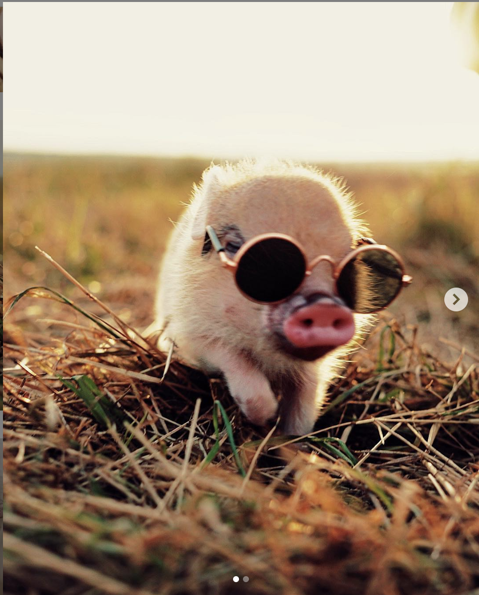

Bowie the Wonder Horse
| Job Description | |
| Position Title | Entertainer |
| Location | Hollywood, CA |
| Employment Type | Full Time |
| Experience | Mid-level |
| Status | Open |
| Description | The open position of Animal Star is responsible for interacting with and providing a pure source of fun and entertainment to all humans and animals. Duties include birthday parties, movie cameos, commercial spots, and being present across all major social media platforms (Facebook, Instagram, Twitter). Responsible for keeping up-to-date information on other acts, and required to attend all meetings held by Giuseppe Pig. Having a valid portfolio and a large Instagram following is preferred. |
| Hiring Lead |  Giuseppe Pig |
| Starting Salary | $200k, 60% per gig, Unlimited food and housing |